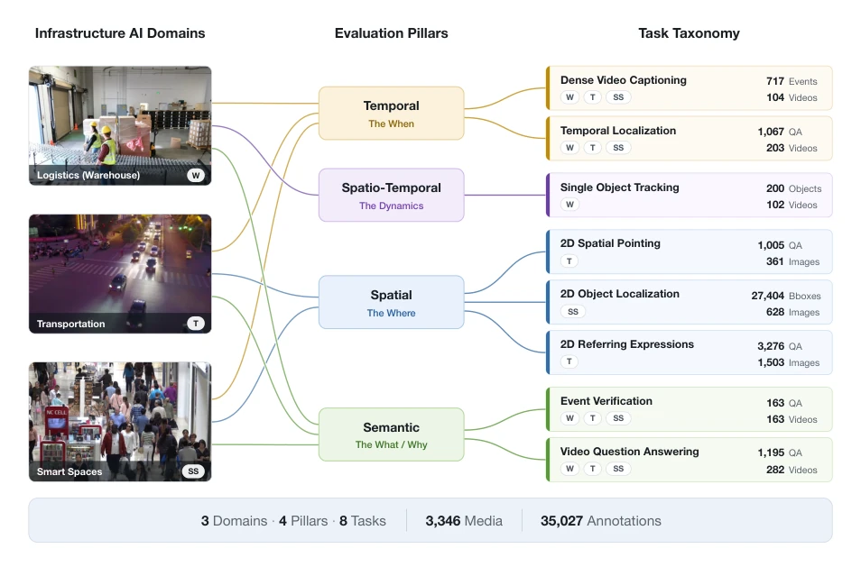
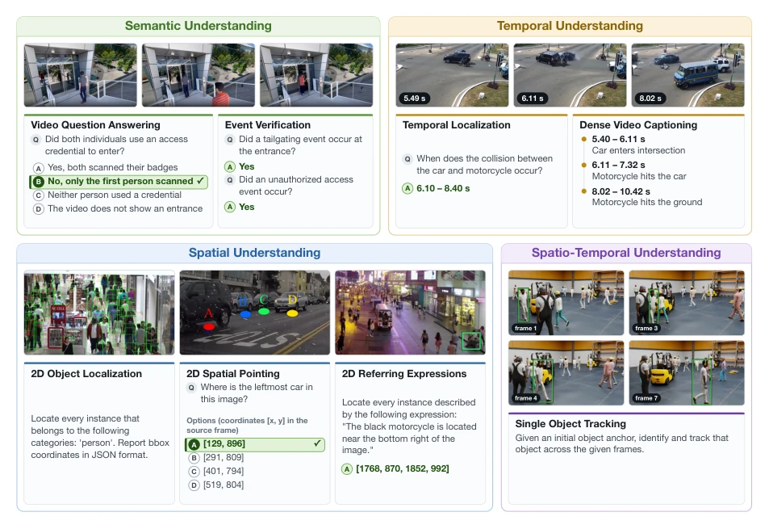

This paper pours cold water on the VLM community obsessed with consumer video evaluation: models that thrive in YouTube discussions may not even recognize a "person" in front of surveillance cameras. VANTAGE-Bench's entry point is very sharp, pointing directly at the "infrastructure AI gap"—model performance in fixed-view, dense scenarios is severely underestimated. The highlight is that it completely abandons the MCQ "free points" mode, forcing models to output coordinates and timestamps, exposing the model's real shortcomings in spatio-temporal localization. However, the criticism point is obvious: the single-object tracking (SOT) track actually uses synthetic data, which is like letting F1 drivers run laps in a simulator; although it can be tested, it still falls short of the muddy road conditions of the real world. Additionally, data sources are mainly concentrated in North America, lacking geographical diversity, and some tasks (such as spatial pointing) rely on procedural generation, potentially having prompt design biases. Overall, this is a necessary "checkup"; although the checkup report (benchmark) itself still has room for improvement, the diagnosed symptom of "spatio-temporal localization bloating" is real.
Current VLM research focuses excessively on action-oriented embodied AI and subject-centric consumer videos (such as first-person perspectives, broadcast media), leading to severe "internet video prior" bias in model training data. This bias causes severe performance degradation when models face dense, tilted, multi-agent visual data generated by fixed infrastructure cameras (such as CCTV, aerial sensors), known as the "infrastructure AI gap". Existing benchmarks such as VideoMME [1], MVBench [2], and EgoSchema [3] are comprehensive but mainly rely on "cinematic priors" (dynamic, human-centric composition) and are limited by MCQ format, unable to test the model's open-ended ability to autonomously generate bounding boxes or temporal boundaries. Additionally, traditional embodied AI datasets (such as KITTI [5], nuScenes [6]) are optimized for moving cameras, while traditional surveillance datasets (such as UCF-Crime [8], VIRAT [9]) lack natural language interfaces. VANTAGE-Bench aims to fill this gap by constructing real-world scenario benchmarks for logistics, traffic, and smart spaces, evaluating the model's physical reasoning capabilities under open-loop, fixed-view conditions, particularly the reliability of spatio-temporal localization.

Figure 1: Taxonomy and distribution of VANTAGE-Bench. The benchmark spans three operational domains (W: Warehouse, T: Transportation, and SS: Smart Spaces), evaluating eight distinct tasks across Semantic, Spatial, Temporal, and Spatio-Temporal pillars. In total, the dataset comprises 3,346 media assets across three annotation regimes: 3,342 video-task annotations, 4,281 image-grounding annotations, and 27,404 detection boxes.
VANTAGE-Bench constructs a multi-task evaluation framework, covering three deployment domains (logistics warehouses, traffic, smart spaces) and four reasoning pillars (semantic, spatial, temporal, spatio-temporal). The overall process includes data construction, task definition, and evaluation protocol. The data layer mixes real-world infrastructure videos (from fixed cameras in cities like San Francisco, Des Moines) and high-fidelity synthetic data (used to simulate rare accidents), totaling 3346 media assets. The task layer designs 8 specific tasks: semantic understanding (Event Verification EV, Video Question Answering VQA), spatial understanding (2D spatial pointing, 2D referring expression RefEx, 2D object localization), temporal understanding (temporal localization, Dense Video Captioning DVC), and spatio-temporal understanding (Single Object Tracking SOT). The innovation lies in breaking the MCQ bottleneck; 5 tasks require the model to directly output coordinates, temporal boundaries, or trajectories, without candidate set interference. Particularly for the SOT task, a "single-pass trajectory generation protocol" is proposed; the model generates continuous trajectories based solely on the visual anchor box of the first frame via a single instruction, without rolling memory updates, thereby isolating visual correspondence capabilities. The evaluation protocol adopts expert-level annotation (not crowdsourced) and introduces professional trackers as baselines to ensure ecological validity and format authenticity of the evaluation.

Figure 2: Visual examples of the eight evaluation tasks in VANTAGE-Bench, categorized by their primary reasoning pillar: Semantic, Spatial, Temporal, and Spatio-Temporal Understanding.
The study conducted zero-shot evaluation on 17 models (including 12 open-source and 5 proprietary models, parameter sizes ranging from 2B to 64B). The dataset contains 3346 media assets, covering video tasks, image localization, and dense detection. Main findings show that the performance gap is not uniformly distributed but concentrated on specific capabilities: Event Verification, Referring Expression, and Temporal Localization are 9-24 points lower than consumer benchmarks across all model sizes, while Video Question Answering and 2D Spatial Pointing perform relatively robustly. Temporal understanding is an absolute weakness; no system's temporal localization mIoU exceeds 55.7 or DVC's SODA_c exceeds 37.3. Open-source models even lead proprietary models in 2D object localization, indicating that parameter size is not the sole determining factor. Scalability analysis shows that adding physical AI training data significantly improved tracking and localization capabilities (improved by 14-26 points), but was almost ineffective for temporal tasks, implying that the scarcity of dense timestamp annotations in training data is the bottleneck.